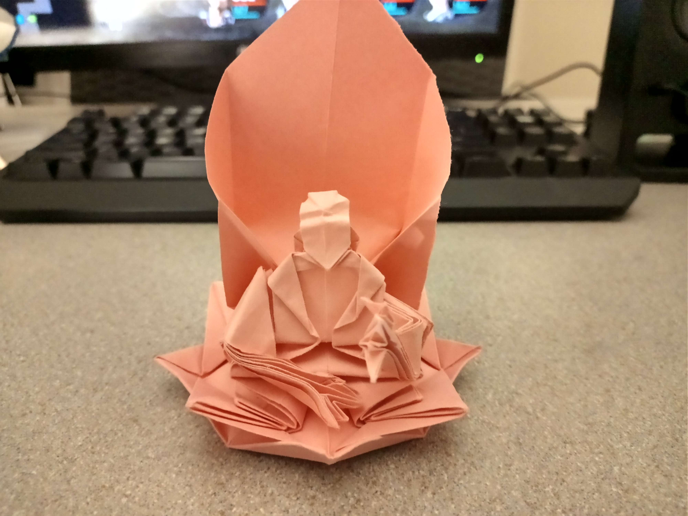
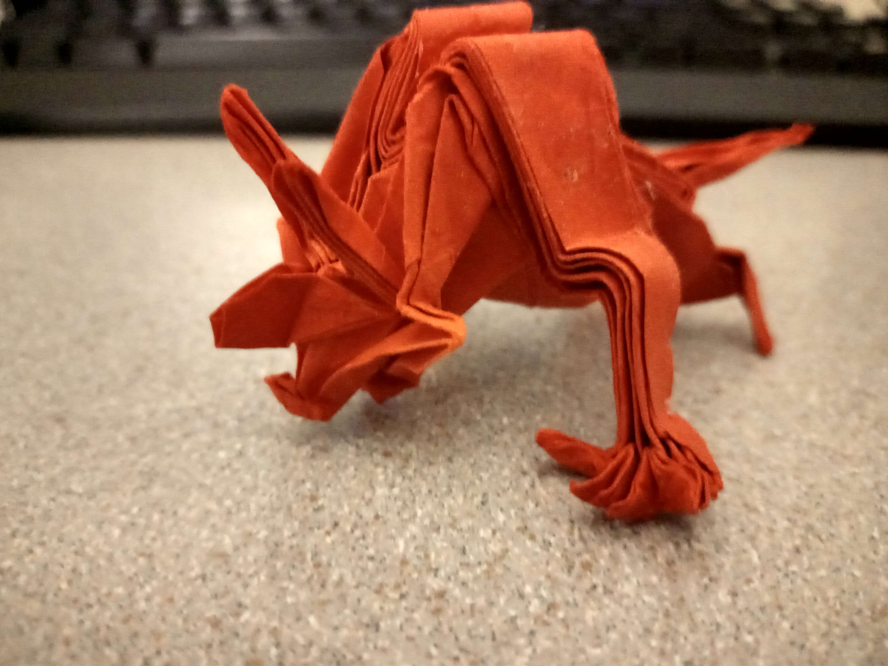
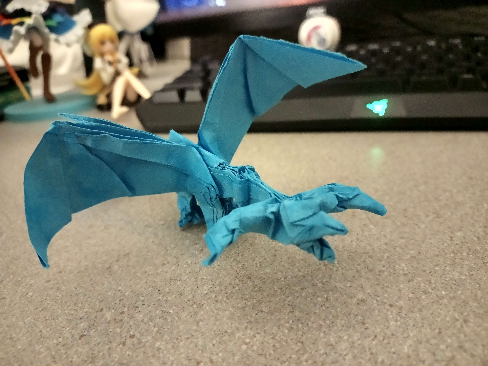
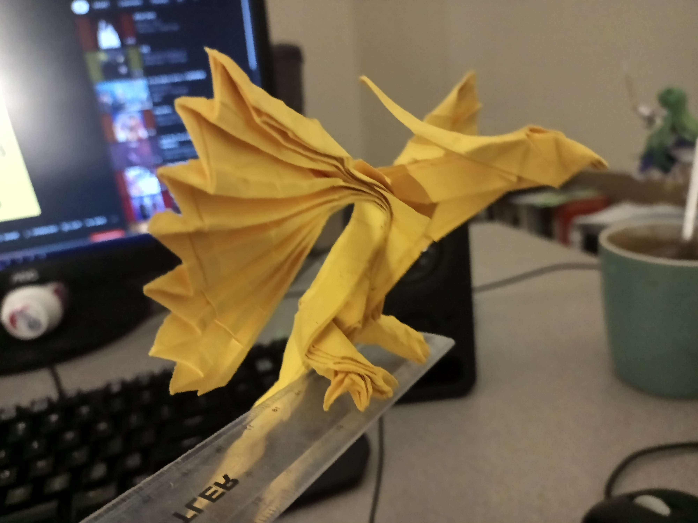
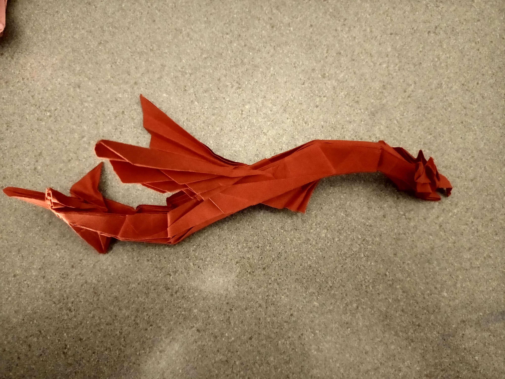
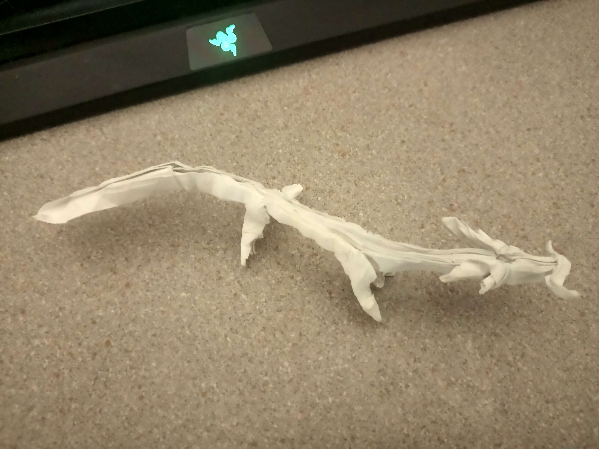

Origami 1
Introduction
As a child, I was never bought many toys so I picked up origami somewhat as a replacement. I dropped it around high school, however, I’ve recently picked it up again.
These models, I believe, are somewhat complex and involve folding several tens of layers in order to create various appendages. However, the only paper I had was a thick, almost cardboard-like, colored A3 paper.
As a result of this, and inexperience after haven’t having done origami for so long, these models didn’t really turn out too nice. I managed to fold the bases but the paper became way too thick to really fine tune some of the details.
Buddha - Hoyjo Takashi

This is a model I remember trying to fold way back. It was the first one I tried to do off the PDF instructions rather than a YouTube video.
Coming back to it, the fold was mostly clean, but I don’t think I properly did the hands. There was supposed to be a flap which turned into the palm but (perhaps from incorrect folding) was much too small on my model. As a result, I did changed it up a little but, but I think it looks fine from afar.
Minotaur - Satoshi Kamiya

This is supposed to be Satoshi Kamiya’s Minotaur. However, again, I messed up the hands and improvised a bit. The end result looks almost nothing like the others, standing on all fours rather than up. It still looks like something though. More like an actual bull I guess?
Darkness Dragon 2.0 - Tadashi Mori

Like, I think alot of other people, I have to thank Tadashi Mori for getting me into origami in the first place. His viral upload way back, almost 12 years now, of the fiery dragon was one of the first complex models I folded as a kid.
This is an attempt at folding the Darkness Dragon 2.0. Again, this fold was plagued with thick paper and inaccurate folding. Attempting to shape the legs was an absolute nightmare. Still, from afar, I think that the model looks decent?
Phoenix - Honyi Wan

This was actually the first folds of this collection so far. My first attempt was actually on Satoshi Kamiya’s Phoenix but, again, because of how thick it became, the paper somewhat imploded. Though, the folding process itself wasn’t too hard and I almost managed to fold the base before it started tearing. But for now, Honyi’s phoenix was much simpler but still looks decently nice.
Leviathan - Tadashi Mori

Again, an old model by Tadashi Mori which I used to fold. This is probably the only model where I didn’t heavily use glue and wet the paper in order to shape it and make it stay in place. It’s also substantially larger than most of the other models despite using the same size paper.
The base of the leviathan is also actually quite simplistic, to an extent, and pre-detailing it almost doubles as a paper plane in shape. Despite this, it’s still quite effective in it’s design and I thought it was the coolest thing when folding it as a kid.
Ryujin 1.2 - Satoshi Kamiya

I definitely cannot fold the 2.1 nor the 3.5 as of now, nor probably the near future. The Ryujin 1.2 however is charmingly simple, especially when looking at just its crease pattern. However, it was still absolutely confusing to collapse.
I actually folded this on an A4 sheet of printer paper as well, for whatever reason. As a recurring theme, the legs are definitely sub-par as I didn’t want to risk tearing a toe off to shape it. The model also requires the paper to be divided into 32’s which gives the model almost a half centimetre of thickness as a result of using printer paper.
Still I think it doesn’t look too bad, especially from afar.